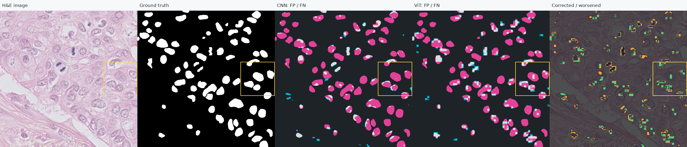
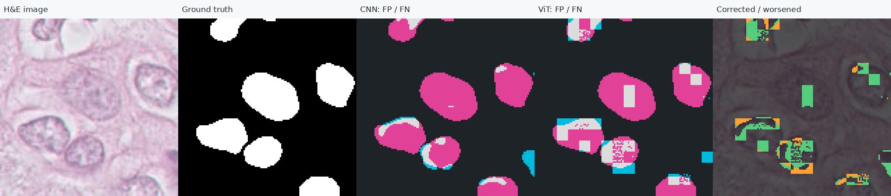
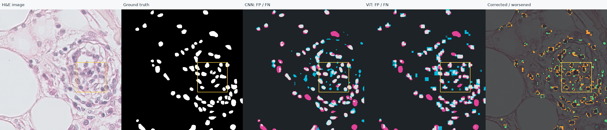
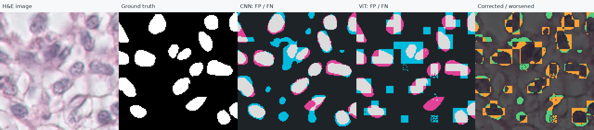

실행 출처: development-reference · seed 20261113 · 검증 10장 / 2개 그룹
저장된 확률과 정답으로 다시 계산한 결과입니다. 이 보고서는 모델을 다시 실행하지 않았습니다. 전체·경계·내부 수치는 원본 JSON에서 확인할 수 있습니다.
Dice는 높을수록 좋습니다. Δ는 ViT − CNN이며 이미지 전체 점수입니다. 검증 데이터에서 epoch·threshold를 선택했으므로 독립적인 성능 검증으로 해석하지 않습니다.
| 이미지 | CNN Dice | ViT Dice | Δ | 교정 px | 악화 px |
|---|---|---|---|---|---|
| 08_1 | 0.711778 | 0.681094 | -0.030685 | 10198 | 11198 |
| 08_2 | 0.664469 | 0.673426 | +0.008957 | 21133 | 15961 |
| 08_3 | 0.589587 | 0.607401 | +0.017814 | 26110 | 17817 |
| 08_4 | 0.518442 | 0.583041 | +0.064600 | 30948 | 14170 |
| 09_1 | 0.256810 | 0.344188 | +0.087378 | 5740 | 4440 |
| 09_2 | 0.395632 | 0.422238 | +0.026606 | 10086 | 7322 |
| 09_3 | 0.509439 | 0.527342 | +0.017902 | 7216 | 8878 |
| 09_4 | 0.666667 | 0.607646 | -0.059020 | 4147 | 6532 |
| 09_5 | 0.472320 | 0.478979 | +0.006659 | 5816 | 5820 |
| 09_6 | 0.621594 | 0.651067 | +0.029473 | 486 | 586 |
오류 지도: 청록 = FP (정답에는 없는 예측), 분홍 = FN (놓친 정답), 회색 = 일치한 전경. 변화 지도: 초록 = 교정, 주황 = 악화. 모두 픽셀 수이며 핵 개수가 아닙니다.
공통 확대 위치 xyxy: [384, 192, 512, 320] (끝 좌표 제외). 선택 영역 Dice 0.1834 → 0.4375; 교정 900px / 악화 303px.

노란 상자의 동일 영역 확대 — 최근접 보간 표시, 집계는 원본 픽셀 기준

공통 확대 위치 xyxy: [320, 224, 448, 352] (끝 좌표 제외). 선택 영역 Dice 0.7557 → 0.6614; 교정 830px / 악화 1470px.

노란 상자의 동일 영역 확대 — 최근접 보간 표시, 집계는 원본 픽셀 기준

점수 차이가 FP 감소인지 FN 감소인지 먼저 확인하세요. 핵의 크기·밀집·염색 차이는 영상에서 관찰하고 별도로 검증할 가설입니다. 이 그림만으로 실패 원인을 확정하거나 개선된 핵의 개수를 주장하지 않습니다.
이미지: TNBC v1.1, CC-BY-4.0, DOI 10.5281/zenodo.2579118. 연구·교육용.